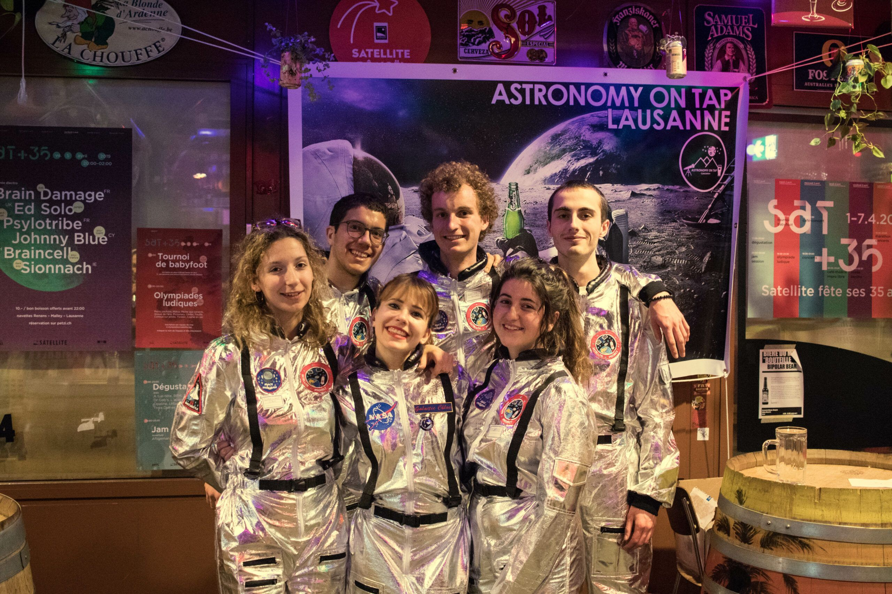

Member of ESERO (The European Space Education Resource Office) project in Belgium. I performed outreach in several schools of Brussels on the topic of space, the solar system, and the planet Mars. The goal is to raise the interest of pupils in space/astrophysics and make them feel more comfortable and familiar with sciences in general.
President of an ISAE-Supaero association of scientific outreach centered around the planet Mars and missions dedicated to the exploration and study of the Red Planet (~100 members).
Role:Janv 2021-April 2022 Management and crew member of a 3-week Martian simulation mission (analog mission) at the Mars Desert Research Station in Utah with 6 other students: fundraising ($18,000), organization of scientific experiments with several space research laboratories. Member of the mission as the crew Astronomer.
Founding member and vice president of an association promoting scientific communication about space and astronomy.
 Role: